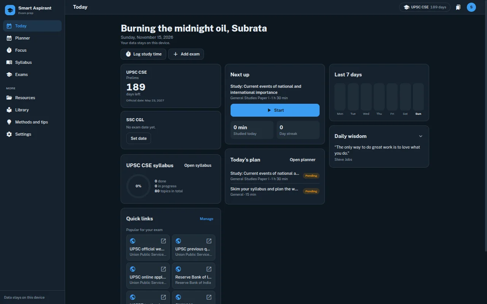
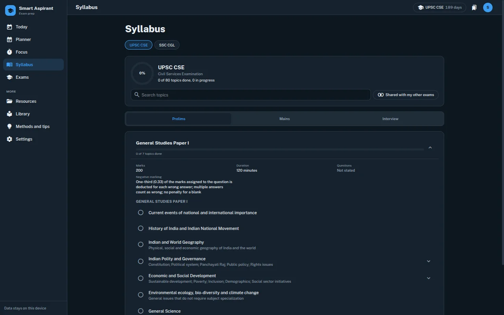
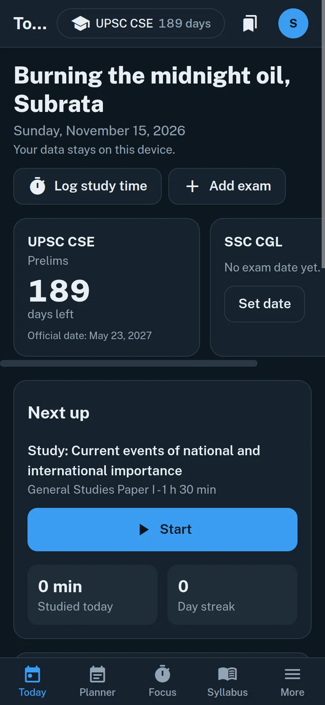

Smart Aspirant
Building tomorrow's officers in a smart, modern way.
A study companion for Indian government exam aspirants that pairs proven study techniques and an adaptive planner with a privacy-first, transparent design.
The goal
Smart Aspirant's goal is to help build tomorrow's officers in a smart, modern way. It assists preparation with smart study techniques and modern methods, through a smart, adaptive planner, while keeping the aspirant's data private and being transparent about how everything works.
What it does
Multi-exam targets
Prepare for several exams at once (UPSC, SSC, IBPS, SBI, LIC, RRB and more), each with a countdown to its official exam date.
Syllabus from official notices
Exam patterns and syllabi come only from the exam bodies' own notices, with sources cited and anything a notice does not state left blank.
Adaptive planner
An AI plan when you add your own Gemini key, or a starter plan built from the official syllabus when you do not.
Focus and wellness
A focus timer, plus gentle nudges for the 20-20-20 eye rule, water, breaks and study methods like Pomodoro and Lozanov.
Quick links to free resources
Over 80 verified free resources, from official sites and NCERT books to educators' own YouTube and Telegram channels.
Hand-off, not competition
Topics open in free tools such as Gemini Guided Learning and NotebookLM instead of rebuilding them.
Privacy and transparency
- No account needed: plans and progress stay on your device.
- Your AI key stays in your browser and goes straight to Google, never to a server of ours.
- Every exam fact links to its official source.
- Works on phone, tablet and desktop, in light or dark mode.
Screenshots



Built with
Next: end-to-end encrypted sync on a self-hosted server.
Timeline
- December 2025: started as the Gemini Adaptive Planner.
- November 2026: rebuilt as Smart Aspirant with multi-exam support and a new responsive design.
Thanks
Thanks to mentors in public policy and education whose input shaped this project.